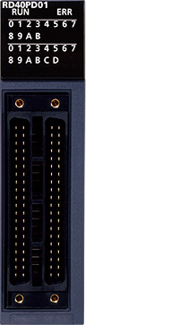
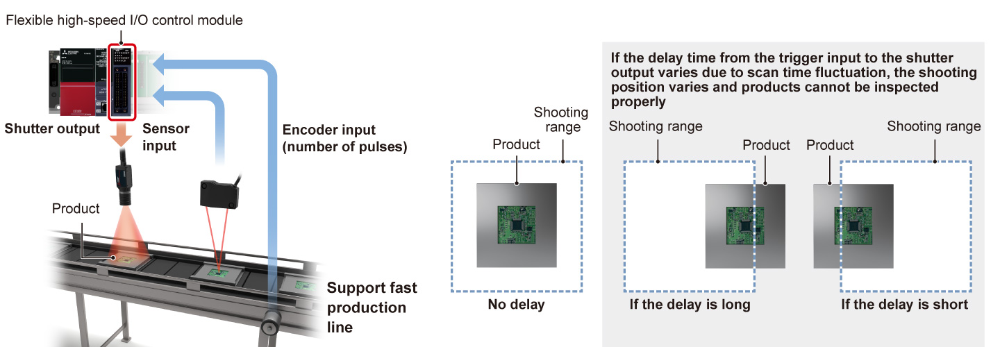
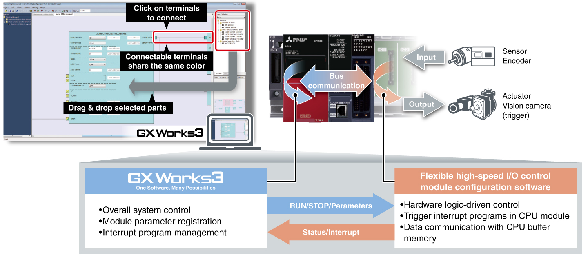

Controllers MELSEC iQ-R Series Product features -High-speed counter, Channel isolated pulse input, Flexible high-speed I/O control-

Flexible high-speed I/O control module
The module includes features such as the ability to program control logic and microsecond-fast asynchronous I/O response times to the programmable controller CPU module and control bus. Ideal for product testing equipment which needs to capture products moving at high-speed.

Features<sup>High-speed, stable I/O response</sup>
- Highly accurate I/O response
- Hardware processing without going through the CPU module enables microsecond-fast asynchronous I/O response times
- Stable response time irrespective of processing speed fluctuation

Easy hardware logic design with intuitive setting tool
- Easy setup
- Design cost reduction
- Hardware logic can be programmed easily using the setting tool integrated with engineering software GX Works3
- This low-cost alternative to HDL programming, logic synthesis and timing analysis reduce the design process, which is a common feature of general FPGA logic design

Specifications<sup>Flexible high-speed I/O control module specifications</sup>
| Item | RD40PD01 | |
|---|---|---|
| DC | Differential | |
| Number of input points | 12 (5/24 V DC/differential) | |
| Number of output points | 8 (5…24 V DC, 0.1 A/point) | 6 |
| Number of interrupts | 8 | |
| Input response time (µs) | ≤ 1 | |
| Output response time (µs) | ≤ 1 | |
| Max. pulse input speed (pulse/s) | 200k (200 kHz) | 8M (2 MHz) |
| Max. pulse output speed (pulse/s) | 200k (200 kHz) | 8M (2 MHz) |
| Main functions executable using main block combinations |
Pulse count, coincidence detection, cam switch, highly-accurate pulse output, PWM output, ratio setting, pulse measurement, electrical interface conversion |
|
| Main hardware logic processing time | Logic operation: min. 87.5 ns, coincidence output: min. 137.5 ns, cam switch: min. 262.5 ns | |
| External interface*1 | ||
| 40-pin connector | ● (2x) | |
- *1.For applicable options, please refer to the relevant product manual.